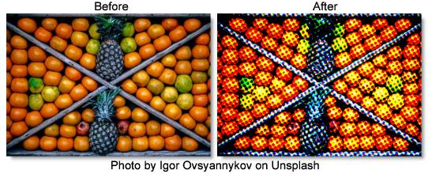

S_HalfToneColor
Description
Generates a version of the image using a colored dot pattern.
The S_HalfToneColor filter comes from the Emmy award winning Boris FX Sapphire filter set.
Category
Stylize.
Controls
Presets
To select a preset, pick one from the Presets window.
Dots Color
Selects the dots' color model.
CMY
Cyan, magenta, and yellow dots are used on a white background.
RGB
Red, green, and blue dots are used on a black background.
Dots Frequency
The frequency of the dots pattern. Increase for finer dots, decrease for larger dots.
Dots Angle
The angle of the overall dots pattern in counterclockwise degrees.
Dots Rel Width
The relative width of the dots. Increase for wider dots, decrease for taller ones.
Dots Sharpness
Scales the sharpness of the edges of the dots.
Dots Lighten
Increase to lighten the resulting dot pattern.
Smooth Source
If positive, the source is blurred by this amount before the halftone is applied. This can be used to remove some detail in the dots and make them more consistently round.
Saturation
Scales the color saturation. Increase for more intense colors. Set to 0 for monochrome.
Dots Shift X & Y
The horizontal and vertical translation of the dots pattern.
Dots Shift RGB
Dots Shift X & Y
The horizontal and vertical translation of the dots pattern.
Shift Red X & Y
The translation of the red color channel.
Shift Green X & Y
The translation of the green color channel.
Shift Blue X & Y
The translation of the blue color channel.